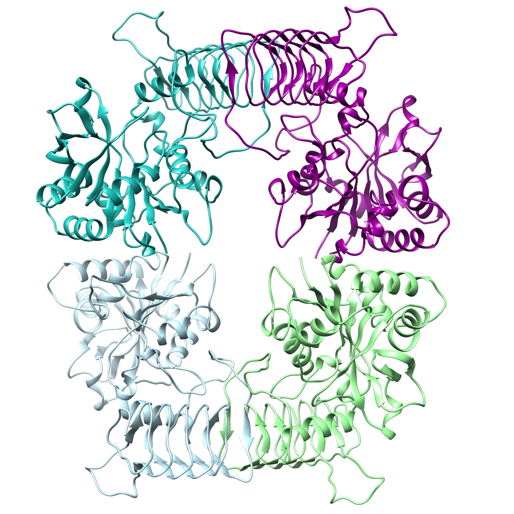
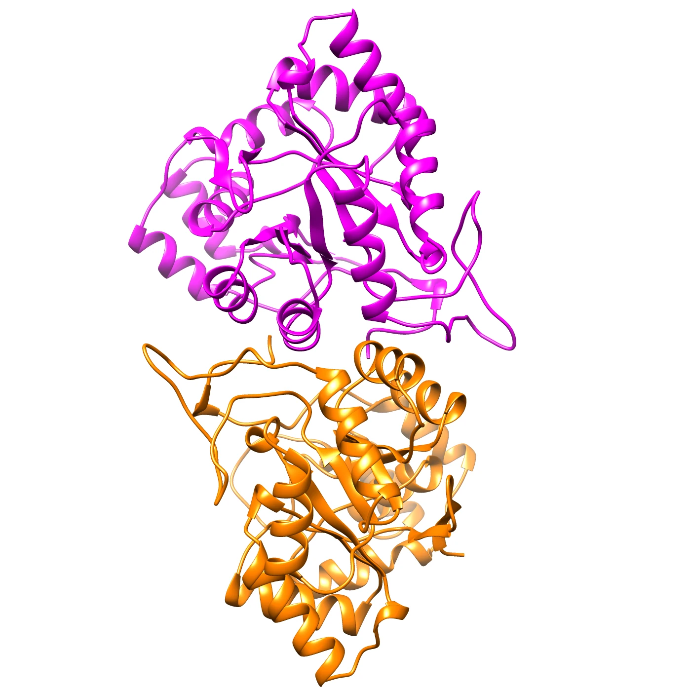
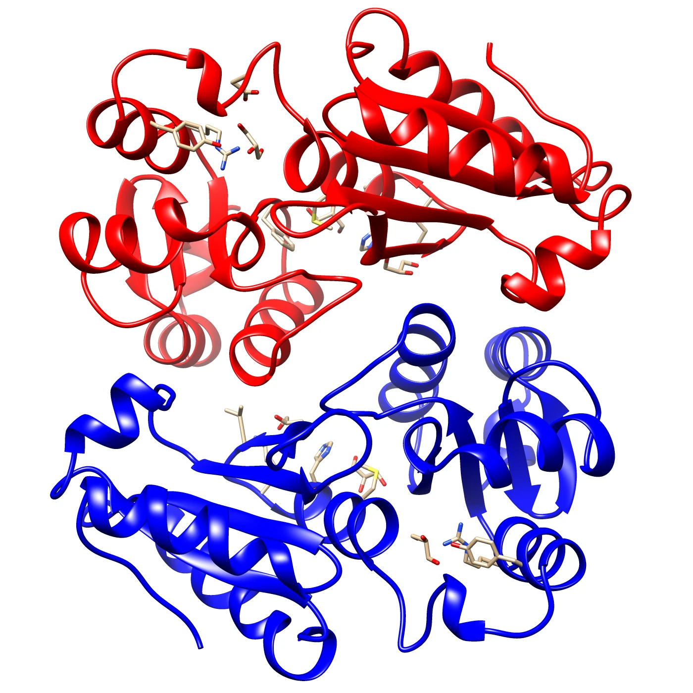
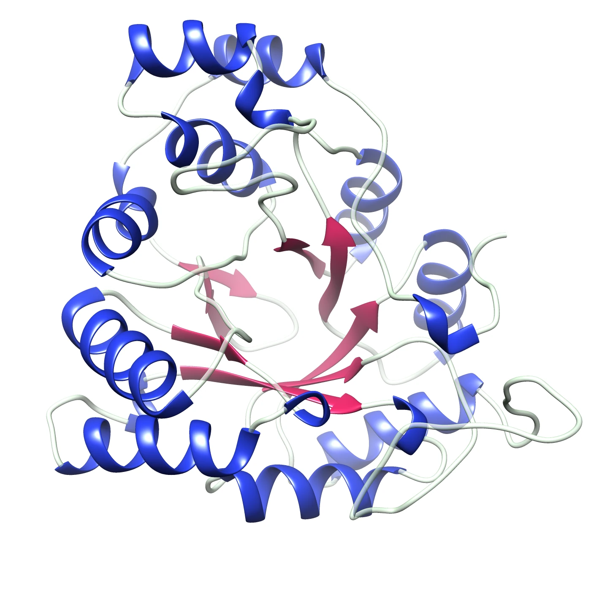
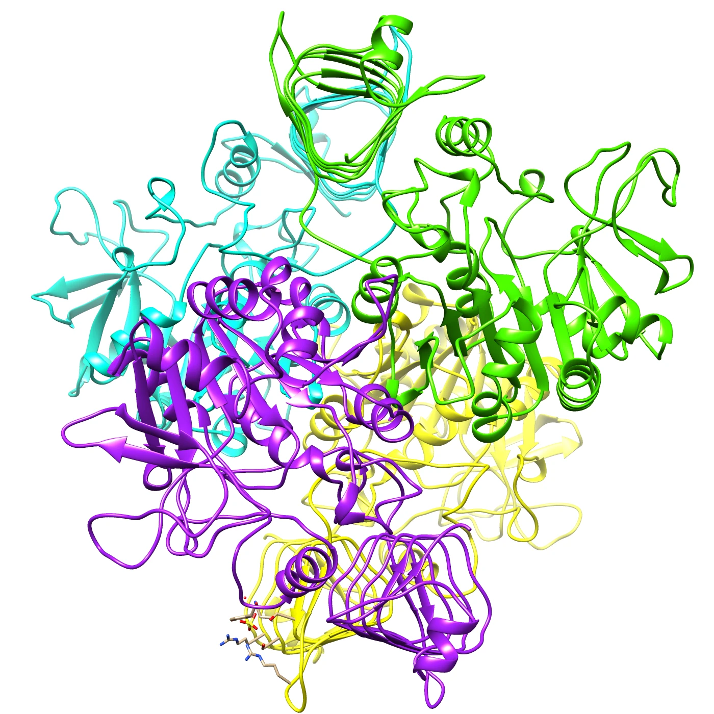
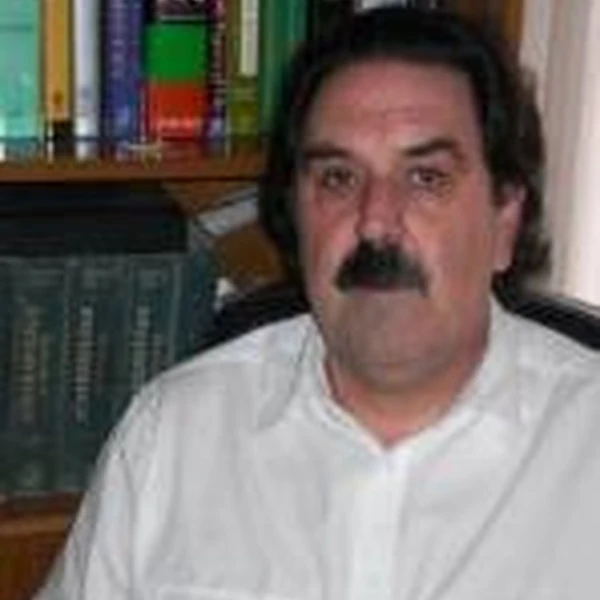

Context
In my fifth year of the PhD, I began a collaboration with Dr. Alberto Iglesias's group at Universidad Nacional del Litoral in Argentina. Two visiting scholars worked with me on crystallization and structure determination.
What started as one project grew into a series: Ral1, M6PR, A6PR, PICOT3, Ral3, and a Melainabacteria ADP-glucose pyrophosphorylase. I delayed graduation by a year to finish the work.
What I did
- Crystallized and solved six primary protein structures for the Iglesias group.
- Soaked and solved additional complexes with substrates, products, and nucleotide ligands.
- Trained visiting scholars in crystallization and structure determination.
- Coordinated the project across two countries and two laboratories.
Key results
- Primary structures
- 6Ral1, M6PR, A6PR, PICOT3, Ral3, Melaina
- Ligand complexes
- 10+Substrates and nucleotides
- Visiting scholars
- 2From Universidad Nacional del Litoral
- The structures define tetrameric and dimeric assemblies across the enzyme family.
- Ligand complexes reveal substrate recognition and conformational changes.
- Additional complexes include Melaina with F6P, G6P, ADP, ATP, G1P, and ADP-glucose; M6PR with NAD and M6P; and A6PR with G1P and G6P.
- The M6PR/A6PR structures were published in Plant and Cell Physiology.
Figures





Collaborators

Dr. Alberto A. Iglesias
Principal Investigator
Universidad Nacional del Litoral
Dr. Matias Asencion
Visiting scholar, crystallography
Universidad Nacional del Litoral
Dr. Jaina Bhayani
Visiting scholar, crystallography
Universidad Nacional del Litoral
Output
Source and disclosure. Adapted from Dr. Zheng's April 2024 research summary. Additional structures in this collaboration remain unpublished.